options(scipen = 100)Libraries
library(tidyverse)
library(rstan)
library(rstanarm)
library(janitor)
library(bayesplot)
library(bayesrules)
library(plotly)
library(broom)
library(broom.mixed)
library(tidybayes)Bayesian SLR
Bayesian SLR adds prior assumptions to the parameters that we try to learn.
\[ Y| \beta_0, \beta_1, \sigma \sim Normal(\beta_0 + \beta_1x, \sigma^2) \]
\[ \beta_0 \sim Normal(m_0, s_0^2) \]
\[ \beta_1 \sim Normal(m_1, s_1^2) \]
\[ \sigma \sim Exp(l) \]
Example: Bike Sharing dataset
bikes %>%
tibble() # A tibble: 500 × 13
date season year month day_o…¹ weekend holiday temp_…² temp_…³ humid…⁴
<date> <fct> <int> <fct> <fct> <lgl> <fct> <dbl> <dbl> <dbl>
1 2011-01-01 winter 2011 Jan Sat TRUE no 57.4 64.7 80.6
2 2011-01-03 winter 2011 Jan Mon FALSE no 46.5 49.0 43.7
3 2011-01-04 winter 2011 Jan Tue FALSE no 46.8 51.1 59.0
4 2011-01-05 winter 2011 Jan Wed FALSE no 48.7 52.6 43.7
5 2011-01-07 winter 2011 Jan Fri FALSE no 46.5 50.8 49.9
6 2011-01-08 winter 2011 Jan Sat TRUE no 44.2 46.6 53.6
7 2011-01-10 winter 2011 Jan Mon FALSE no 43.1 45.6 48.3
8 2011-01-11 winter 2011 Jan Tue FALSE no 44.5 49.2 68.6
9 2011-01-12 winter 2011 Jan Wed FALSE no 44.7 46.4 60.0
10 2011-01-13 winter 2011 Jan Thu FALSE no 44.2 45.6 47.0
# … with 490 more rows, 3 more variables: windspeed <dbl>, weather_cat <fct>,
# rides <int>, and abbreviated variable names ¹day_of_week, ²temp_actual,
# ³temp_feel, ⁴humiditybikes %>%
tibble() %>%
summary() date season year month day_of_week
Min. :2011-01-01 fall :164 Min. :2011 Mar : 58 Fri:73
1st Qu.:2011-05-21 spring:139 1st Qu.:2011 Nov : 57 Mon:71
Median :2012-01-11 summer: 38 Median :2012 Dec : 56 Sat:74
Mean :2012-01-02 winter:159 Mean :2012 Apr : 55 Sun:67
3rd Qu.:2012-06-01 3rd Qu.:2012 Oct : 54 Thu:71
Max. :2012-12-31 Max. :2012 Feb : 52 Tue:79
(Other):168 Wed:65
weekend holiday temp_actual temp_feel humidity
Mode :logical no :488 Min. :42.65 Min. :45.46 Min. : 0.00
FALSE:359 yes: 12 1st Qu.:55.17 1st Qu.:59.88 1st Qu.:51.57
TRUE :141 Median :62.90 Median :69.24 Median :63.35
Mean :63.33 Mean :69.14 Mean :63.44
3rd Qu.:72.11 3rd Qu.:79.44 3rd Qu.:74.47
Max. :85.38 Max. :86.94 Max. :97.25
windspeed weather_cat rides
Min. : 1.500 categ1:290 Min. : 20
1st Qu.: 8.906 categ2:191 1st Qu.:2208
Median :12.532 categ3: 19 Median :3490
Mean :13.019 Mean :3482
3rd Qu.:15.917 3rd Qu.:4624
Max. :34.000 Max. :6946
bikes %>%
ggplot(aes(x = rides)) +
geom_histogram(color = 'white', alpha = 0.9)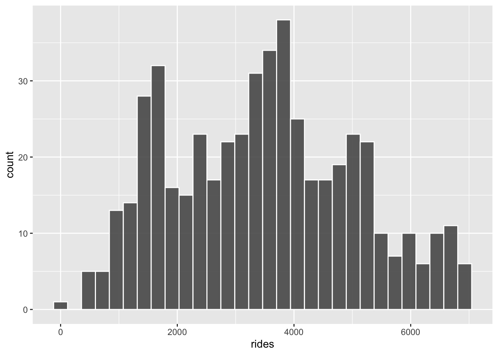
bikes %>%
ggplot(aes(sample = rides)) +
stat_qq() +
stat_qq_line()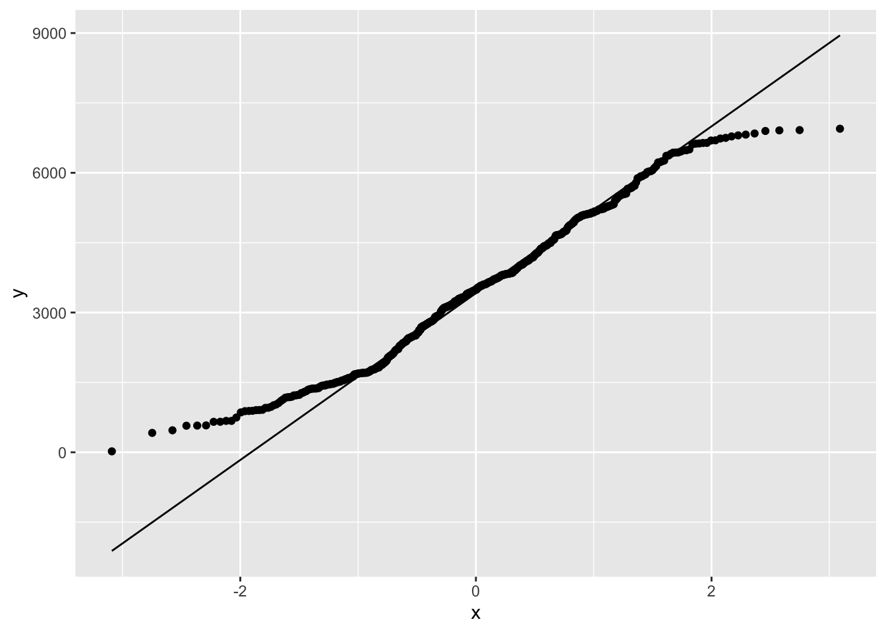
bikes %>%
ggplot(aes(sample = log(rides))) +
stat_qq() +
stat_qq_line()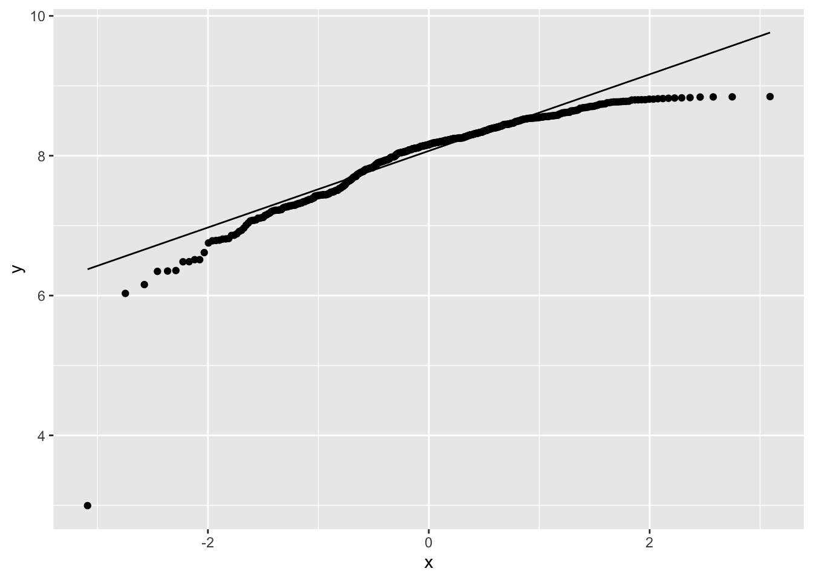
bikes %>%
ggplot(aes(x = temp_feel, y = rides)) +
geom_point() +
geom_smooth(method = 'lm', se = F)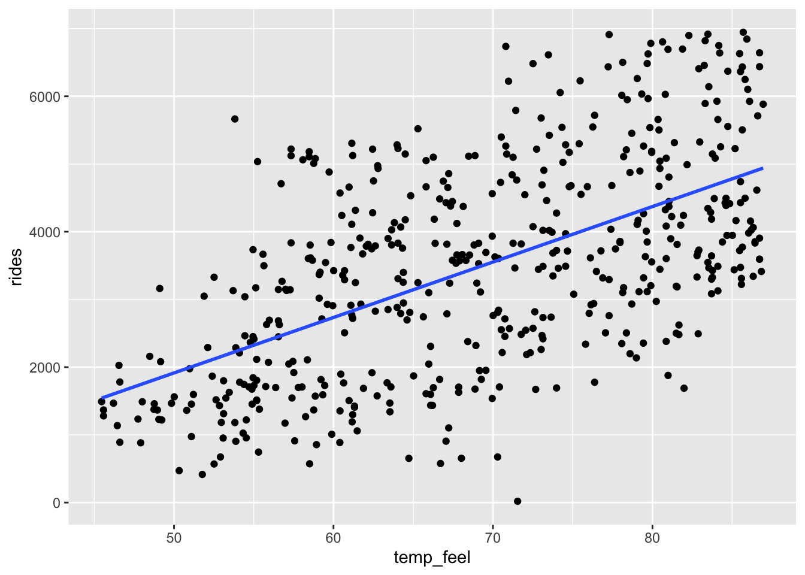
bikes %>%
summarise(cor(temp_feel, rides)) cor(temp_feel, rides)
1 0.5824898Based on past bikeshare analyses, suppose we have the following prior understanding of this relationship:
Observation: On an average temperature day, say 65 or 70 degrees for D.C., there are typically around 5000 riders, though this average could be somewhere between 3000 and 7000. What does it mean? \[y = \beta_1(x - 70) + \beta_0\]
Since \((7000-3000)/4 = 1000\), \[\beta_0 \sim Normal(m_0 = 5000, s_0^2 = 1000^2)\].
Observation: For every one degree increase in temperature, ridership typically increases by 100 rides, though this average increase could be as low as 20 or as high as 180. What does it mean? Since, \((180 - 20)/4 = 40\),
\[\beta_1 \sim Normal(\mu_1 = 100, s_1^2 = 40^2)\]
Observation: At any given temperature, daily ridership will tend to vary with a moderate standard deviation of 1250 rides. What does it mean? \(\frac{1}{l} = 1250\), i.e, \(l = \frac{1}{1250}=\) 8^{-4}. Thus,
\[\sigma \sim Exp(l = 0.0008)\]
We have our priors for the model parameters.
plot_normal(mean = 5000, sd = 1000) +
labs(x = "beta_0c", y = "pdf")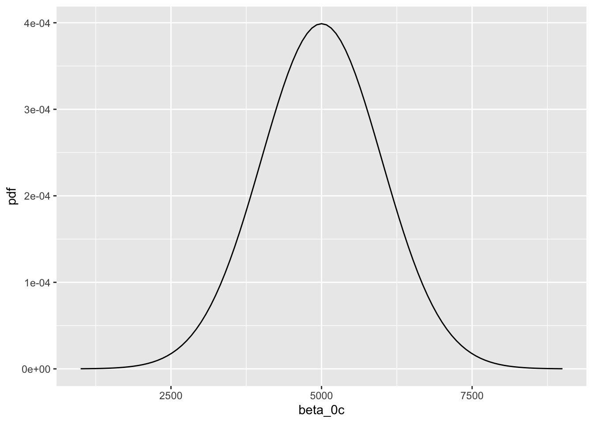
plot_normal(mean = 100, sd = 40) +
labs(x = "beta_1", y = "pdf")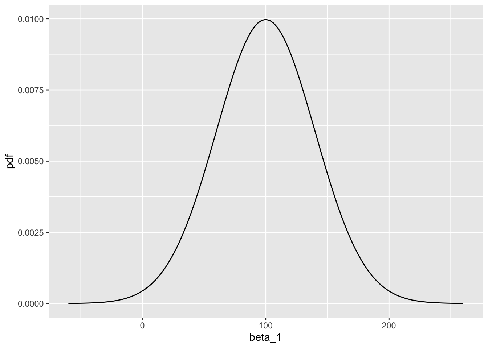
plot_gamma(shape = 1, rate = 0.0008) +
labs(x = "sigma", y = "pdf")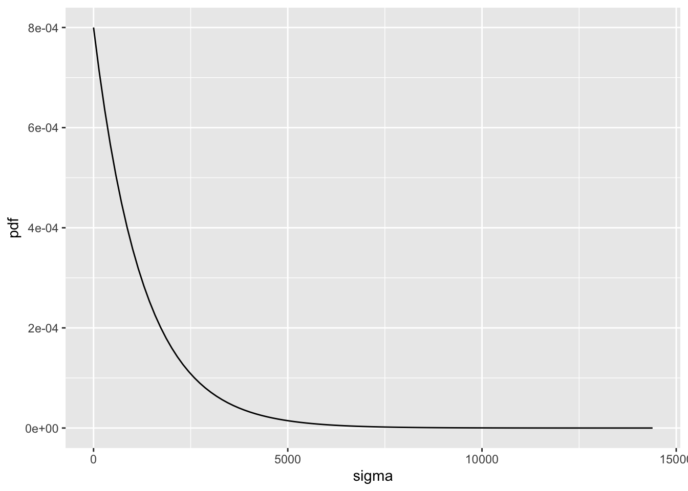
Markov Chain Monte Carlo
- Dynamical system
- Not deterministic
- Looking for a steady state solution
- ‘Attractor’ in the parameter space
- Distribution in the attractor is the posterior distribution
bike_model <-
stan_glm(rides ~ temp_feel,
data = bikes,
family = gaussian,
prior_intercept = normal(5000, 1000),
prior = normal(100, 40),
prior_aux = exponential(0.0008),
chains = 4,
iter = 5000*2,
seed = 84735)
SAMPLING FOR MODEL 'continuous' NOW (CHAIN 1).
Chain 1:
Chain 1: Gradient evaluation took 6.4e-05 seconds
Chain 1: 1000 transitions using 10 leapfrog steps per transition would take 0.64 seconds.
Chain 1: Adjust your expectations accordingly!
Chain 1:
Chain 1:
Chain 1: Iteration: 1 / 10000 [ 0%] (Warmup)
Chain 1: Iteration: 1000 / 10000 [ 10%] (Warmup)
Chain 1: Iteration: 2000 / 10000 [ 20%] (Warmup)
Chain 1: Iteration: 3000 / 10000 [ 30%] (Warmup)
Chain 1: Iteration: 4000 / 10000 [ 40%] (Warmup)
Chain 1: Iteration: 5000 / 10000 [ 50%] (Warmup)
Chain 1: Iteration: 5001 / 10000 [ 50%] (Sampling)
Chain 1: Iteration: 6000 / 10000 [ 60%] (Sampling)
Chain 1: Iteration: 7000 / 10000 [ 70%] (Sampling)
Chain 1: Iteration: 8000 / 10000 [ 80%] (Sampling)
Chain 1: Iteration: 9000 / 10000 [ 90%] (Sampling)
Chain 1: Iteration: 10000 / 10000 [100%] (Sampling)
Chain 1:
Chain 1: Elapsed Time: 0.215584 seconds (Warm-up)
Chain 1: 0.309724 seconds (Sampling)
Chain 1: 0.525308 seconds (Total)
Chain 1:
SAMPLING FOR MODEL 'continuous' NOW (CHAIN 2).
Chain 2:
Chain 2: Gradient evaluation took 1e-05 seconds
Chain 2: 1000 transitions using 10 leapfrog steps per transition would take 0.1 seconds.
Chain 2: Adjust your expectations accordingly!
Chain 2:
Chain 2:
Chain 2: Iteration: 1 / 10000 [ 0%] (Warmup)
Chain 2: Iteration: 1000 / 10000 [ 10%] (Warmup)
Chain 2: Iteration: 2000 / 10000 [ 20%] (Warmup)
Chain 2: Iteration: 3000 / 10000 [ 30%] (Warmup)
Chain 2: Iteration: 4000 / 10000 [ 40%] (Warmup)
Chain 2: Iteration: 5000 / 10000 [ 50%] (Warmup)
Chain 2: Iteration: 5001 / 10000 [ 50%] (Sampling)
Chain 2: Iteration: 6000 / 10000 [ 60%] (Sampling)
Chain 2: Iteration: 7000 / 10000 [ 70%] (Sampling)
Chain 2: Iteration: 8000 / 10000 [ 80%] (Sampling)
Chain 2: Iteration: 9000 / 10000 [ 90%] (Sampling)
Chain 2: Iteration: 10000 / 10000 [100%] (Sampling)
Chain 2:
Chain 2: Elapsed Time: 0.275764 seconds (Warm-up)
Chain 2: 0.283785 seconds (Sampling)
Chain 2: 0.559549 seconds (Total)
Chain 2:
SAMPLING FOR MODEL 'continuous' NOW (CHAIN 3).
Chain 3:
Chain 3: Gradient evaluation took 9e-06 seconds
Chain 3: 1000 transitions using 10 leapfrog steps per transition would take 0.09 seconds.
Chain 3: Adjust your expectations accordingly!
Chain 3:
Chain 3:
Chain 3: Iteration: 1 / 10000 [ 0%] (Warmup)
Chain 3: Iteration: 1000 / 10000 [ 10%] (Warmup)
Chain 3: Iteration: 2000 / 10000 [ 20%] (Warmup)
Chain 3: Iteration: 3000 / 10000 [ 30%] (Warmup)
Chain 3: Iteration: 4000 / 10000 [ 40%] (Warmup)
Chain 3: Iteration: 5000 / 10000 [ 50%] (Warmup)
Chain 3: Iteration: 5001 / 10000 [ 50%] (Sampling)
Chain 3: Iteration: 6000 / 10000 [ 60%] (Sampling)
Chain 3: Iteration: 7000 / 10000 [ 70%] (Sampling)
Chain 3: Iteration: 8000 / 10000 [ 80%] (Sampling)
Chain 3: Iteration: 9000 / 10000 [ 90%] (Sampling)
Chain 3: Iteration: 10000 / 10000 [100%] (Sampling)
Chain 3:
Chain 3: Elapsed Time: 0.281978 seconds (Warm-up)
Chain 3: 0.294287 seconds (Sampling)
Chain 3: 0.576265 seconds (Total)
Chain 3:
SAMPLING FOR MODEL 'continuous' NOW (CHAIN 4).
Chain 4:
Chain 4: Gradient evaluation took 6e-06 seconds
Chain 4: 1000 transitions using 10 leapfrog steps per transition would take 0.06 seconds.
Chain 4: Adjust your expectations accordingly!
Chain 4:
Chain 4:
Chain 4: Iteration: 1 / 10000 [ 0%] (Warmup)
Chain 4: Iteration: 1000 / 10000 [ 10%] (Warmup)
Chain 4: Iteration: 2000 / 10000 [ 20%] (Warmup)
Chain 4: Iteration: 3000 / 10000 [ 30%] (Warmup)
Chain 4: Iteration: 4000 / 10000 [ 40%] (Warmup)
Chain 4: Iteration: 5000 / 10000 [ 50%] (Warmup)
Chain 4: Iteration: 5001 / 10000 [ 50%] (Sampling)
Chain 4: Iteration: 6000 / 10000 [ 60%] (Sampling)
Chain 4: Iteration: 7000 / 10000 [ 70%] (Sampling)
Chain 4: Iteration: 8000 / 10000 [ 80%] (Sampling)
Chain 4: Iteration: 9000 / 10000 [ 90%] (Sampling)
Chain 4: Iteration: 10000 / 10000 [100%] (Sampling)
Chain 4:
Chain 4: Elapsed Time: 0.189801 seconds (Warm-up)
Chain 4: 0.29564 seconds (Sampling)
Chain 4: 0.485441 seconds (Total)
Chain 4: Dynamics in the phase space (i.e., parameter space)
bike_model %>%
as_tibble() %>%
#mutate(time = rep(1:50, 1)) %>%
tail(n = 100) %>%
clean_names() %>%
plot_ly(x = ~log(-intercept),
y = ~temp_feel/10,
z = ~sigma,
type = 'scatter3d',
mode = 'lines') %>%
add_markers() %>%
layout(scene = list(xaxis = list(title = 'beta_0'),
yaxis = list(title = 'beta_1'),
zaxis = list(title = 'sigma')))# Trace plots of parallel chains
mcmc_trace(bike_model, size = 0.1)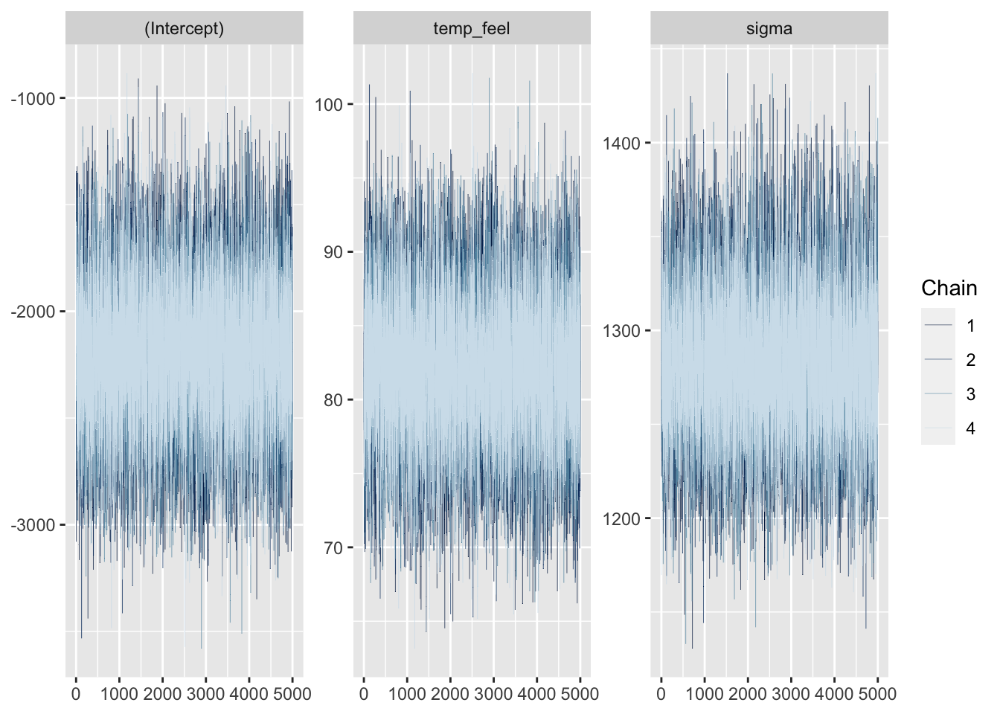
# Density plots of parallel chains
mcmc_dens_overlay(bike_model)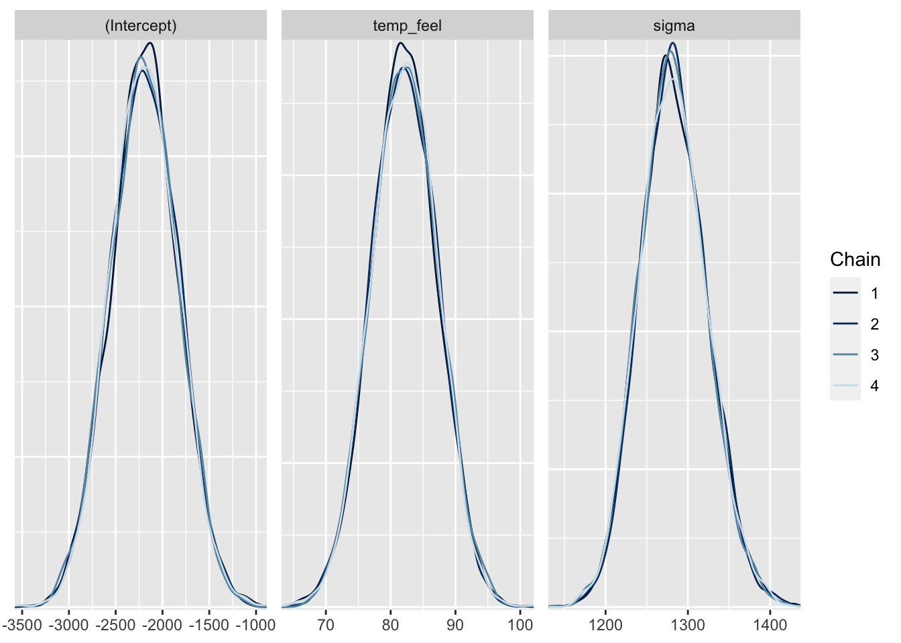
# model parameters
tidy(bike_model)# A tibble: 2 × 3
term estimate std.error
<chr> <dbl> <dbl>
1 (Intercept) -2194. 362.
2 temp_feel 82.2 5.15tidy(bike_model,
effects = c("fixed", "aux"),
conf.int = TRUE,
conf.level = 0.80)# A tibble: 4 × 5
term estimate std.error conf.low conf.high
<chr> <dbl> <dbl> <dbl> <dbl>
1 (Intercept) -2194. 362. -2656. -1732.
2 temp_feel 82.2 5.15 75.6 88.8
3 sigma 1281. 40.7 1231. 1336.
4 mean_PPD 3487. 80.4 3385. 3591. # 50 simulated model lines
bikes %>%
add_fitted_draws(bike_model, n = 50) %>%
ggplot(aes(x = temp_feel, y = rides)) +
geom_line(aes(y = .value, group = .draw), alpha = 0.15) +
geom_point(data = bikes, size = 0.05)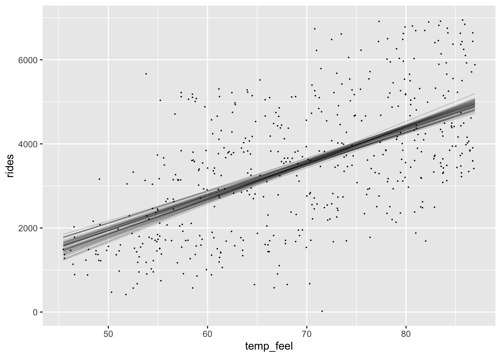
How many coefficients (beta_1) is below or equal to 0?
bike_model %>%
as_tibble() %>%
filter(temp_feel <= 0)# A tibble: 0 × 3
# … with 3 variables: (Intercept) <dbl>, temp_feel <dbl>, sigma <dbl>What about variation?
bikes %>%
add_predicted_draws(bike_model, n = 4) %>%
ggplot(aes(x = temp_feel, y = rides)) +
geom_point(aes(y = .prediction, group = .draw), size = 0.5) +
facet_wrap(~ .draw)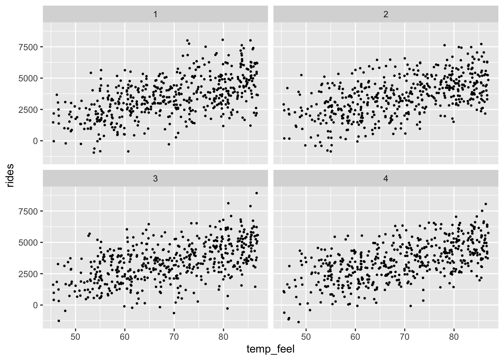
Predictions
- Sampling variation (ys)
- Posterior parameter variation (betas, sigma)
Predict possibe predictions for x = 75?
set.seed(84735)
df2 <-
bike_model %>%
as_tibble() %>%
clean_names() %>%
mutate(mu_x_75 = temp_feel*75 + intercept ) %>%
mutate(preds_75 = rnorm(20000, mu_x_75, sigma))
df2# A tibble: 20,000 × 5
intercept temp_feel sigma mu_x_75 preds_75
<dbl> <dbl> <dbl> <dbl> <dbl>
1 -2657. 88.2 1323. 3955. 4838.
2 -2188. 83.0 1323. 4038. 3874.
3 -1984. 81.5 1363. 4132. 5196.
4 -2242. 82.5 1265. 3945. 4244.
5 -1641. 74.7 1289. 3963. 4989.
6 -3079. 94.8 1252. 4028. 6010.
7 -1713. 75.6 1355. 3957. 4027.
8 -1351. 71.0 1358. 3975. 6482.
9 -2500. 84.7 1243. 3850. 4245.
10 -2194. 82.5 1253. 3995. 4619.
# … with 19,990 more rowsdf2 %>%
ggplot() +
geom_density(aes(x = preds_75, fill = 'blue'), alpha = 0.5) +
geom_density(aes(x = mu_x_75, fill = 'red'), alpha = 0.5)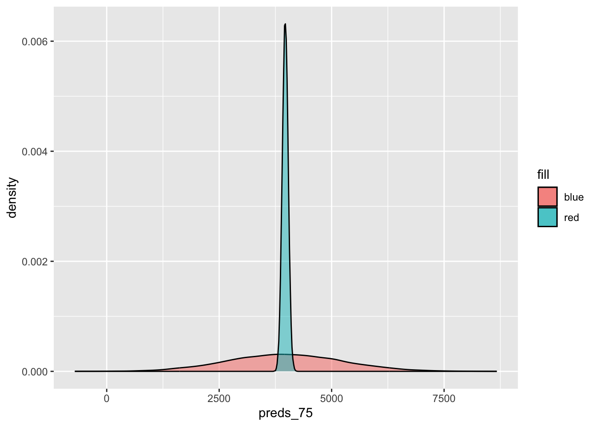
rstan predictions
set.seed(84735)
shortcut_prediction <-
posterior_predict(bike_model,
newdata = data.frame(temp_feel = 75))
shortcut_prediction %>%
tibble()# A tibble: 20,000 × 1
.[,"1"]
<dbl>
1 4838.
2 3874.
3 5196.
4 4244.
5 4989.
6 6010.
7 4027.
8 6482.
9 4245.
10 4619.
# … with 19,990 more rowsWhat is missing?
- 9.6: sequential regression modeling
- 9.7: different rstan priors